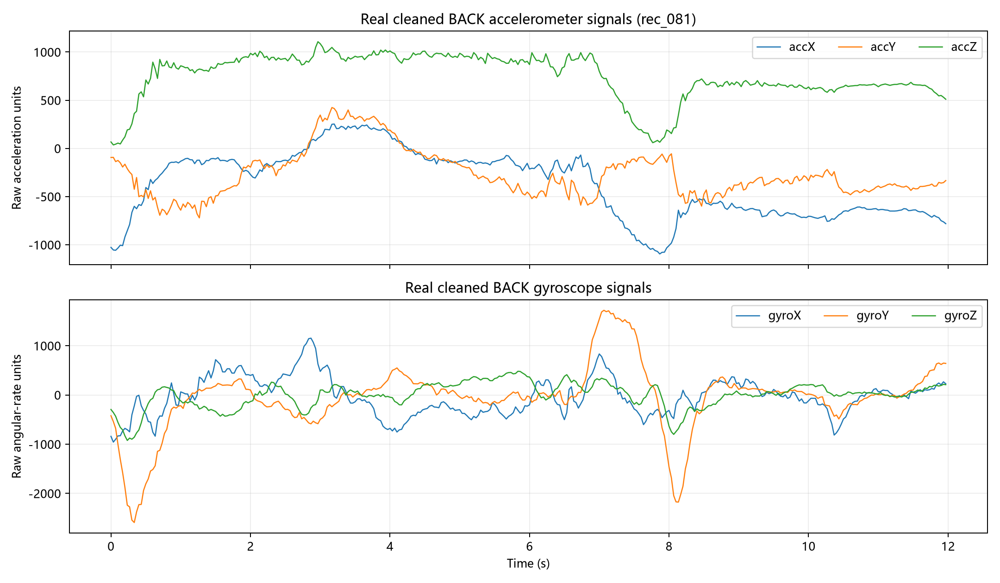
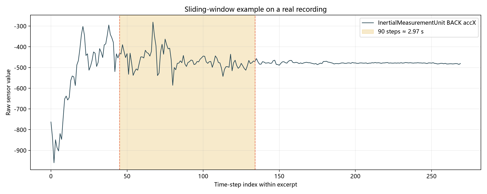
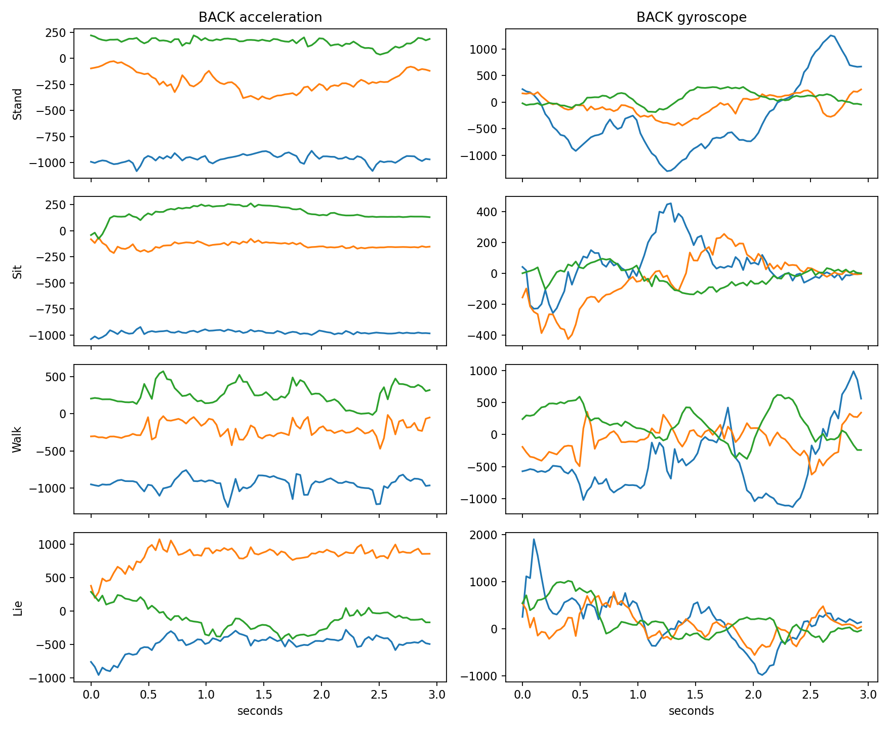
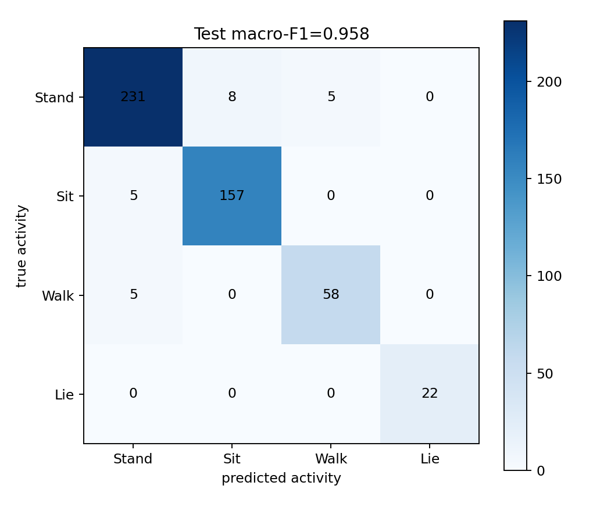
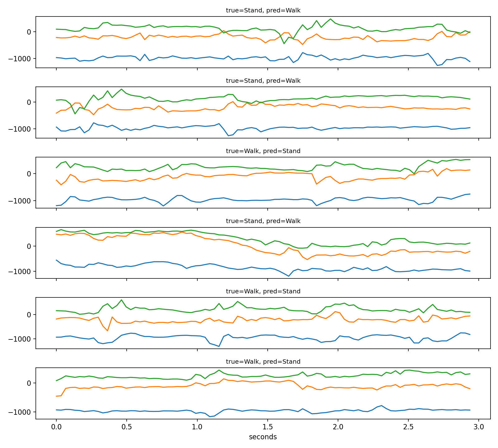

惯性传感器活动识别
惯性传感器活动识别利用多位置加速度和角速度信号描述姿态、周期运动和活动强度。传感器方向、佩戴位置、采样条件和个体差异都会改变波形。
1. 人体活动识别与应用
活动类别应先根据应用场景定义。健康监测关注持续时间和活动转换，康复训练关注动作质量和重复次数，安全系统关注跌倒或异常动作的漏检代价。标签定义不同，数据采集和评价方式也会不同。
同一动作在不同人、设备、佩戴位置和环境中会产生不同波形。活动识别结果描述模型在某个数据分布中的判断，部署到新设备或新群体前需要重新检查采样、校准和错误代价。
活动识别还要区分“正在做什么”和“动作质量如何”。窗口分类可以给出主活动标签，连续状态估计可以描述活动转换、持续时间和节律，风险检测则需要把漏检和误报的代价写入决策规则。
活动标签可以按层级组织。最上层区分静止与运动，中间层区分站、坐、走、跑或上下楼，更细层可以描述拿取物品、开门、康复动作或工作流程。标签越细，动作之间的边界越接近，采集人数、标注一致性和模型容量要求也越高。
活动识别的输入不只来自惯性传感器。视频能够提供姿态与场景，压力垫能够记录接触和步态，心率与肌电反映生理负荷，气压计可帮助识别楼层变化。惯性传感器体积小、连续记录方便、对光照不敏感，因此常用于可穿戴和移动设备；它对设备方向、固定方式和个体动作习惯较敏感。
标签通常由人工观察、同步视频、实验脚本或设备事件生成。活动开始与结束的时刻往往存在几百毫秒到数秒的标注差异，过渡动作也可能同时具有两个活动的特征。数据集需要保留标注来源、时间精度和未知标签，模型训练才知道哪些窗口可以作为清晰样本。
研究问题决定输出形式。窗口分类适合快速建立基线，序列标注为每个时刻分配状态，动作检测同时预测类别和起止时间，连续回归则估计速度、关节角度或能量消耗。评价指标应与输出形式一致。
2. 惯性传感器与坐标系
加速度计测量三个方向上的比力，读数通常同时包含身体运动和重力投影；陀螺仪测量绕三个轴的角速度，更直接地反映旋转。两类信号一起使用时，可以同时观察平移、姿态和旋转变化。
传感器坐标轴随设备转动，身体坐标系则与躯干、上肢和下肢方向有关。同一个人把设备旋转后，三个轴的波形会重新分配，活动本身却没有改变。重力方向可以帮助估计姿态，但快速运动、震动和传感器噪声会让姿态分离变得困难。
校准、坐标变换和佩戴位置记录决定了波形能否比较。常见处理包括去除静态偏置、估计重力分量、把设备坐标转换到身体坐标，以及保留位置、轴和传感器类型的字段。
多传感器融合可以在原始通道、特征或决策层完成。融合前需要检查时间同步和单位，融合后仍要保留每个位置、轴和传感器类型的可追溯名称，避免把方向变化误当成活动变化。
静止时，加速度计仍会记录重力在三个设备轴上的投影，因此躺卧、站立和坐姿可能主要表现为各轴基线不同。快速运动会在重力分量上叠加动态加速度。三轴合加速度能够减弱设备旋转的影响，也会丢失方向信息，常与原始三轴共同使用。
陀螺仪的角速度积分可以近似得到姿态变化，微小偏置会随时间累积成漂移。加速度计提供重力方向的长期参照，磁力计可以补充航向，卡尔曼滤波或互补滤波利用多种传感器各自的优势估计姿态。室内磁场干扰、碰撞和松动会破坏这些假设。
不同设备可能使用 m/s²、g、degree/s、rad/s 或未校准原始单位。读取数据时先核对量纲、动态范围、零点和饱和上限。某一通道长期贴近最大值通常提示饱和，长期保持常数可能提示掉线或被冻结。
多部位采集需要时间同步。背部和手臂传感器相差几个采样点时，同一动作的峰值会错开，融合模型可能把同步误差当成动作模式。硬件时钟、统一时间戳和对齐事件可以用于校准，剩余偏差应记录在数据质量报告中。

3. 采样、滤波与信号质量
真实采样率应由时间戳间隔核对。重复、回退和大间隔会破坏窗口长度的含义；降采样前通常使用低通滤波，滤波器的截止频率需要根据目标活动的变化速度选择。
常见质量问题包括缺失值、无穷值、传感器掉线、偏置漂移和标签空白。插值适合修补短暂缺测，不能跨越独立采集段，也不能把长时间掉线伪装成连续动作。质量报告应同时保存缺失比例、连续缺失长度和滤波参数。
除了时间域波形，还可以使用频域和时频表示描述周期运动。功率谱适合观察步态等稳定周期，短时傅里叶变换或小波表示适合活动转换；这些表示仍需结合佩戴位置和标签解释。
滤波会改变峰值、相位和过渡边界。零相位离线滤波与实时因果滤波的结果不同，重采样还会改变可见的最高频率；报告中需要同时说明滤波器类型、截止频率、边界处理和是否使用未来采样点。
姿态变化可以通过重力方向、四元数或旋转矩阵进行补偿，活动强度也可以使用合加速度和姿态无关的幅度表示。补偿方法可能削弱方向信息，因此需要保留原始通道与变换后通道，并用代表波形检查是否产生人工边界。
采样定理要求采样频率高于目标信号最高频率的两倍。人体日常活动的主要能量通常集中在较低频段，冲击、振动和器件噪声可以占据更高频率。直接降低采样率会把高频成分折叠到低频，因此应先低通滤波，再按目标频率重采样。
滤波器有幅频和相位特性。移动平均容易理解，也会平滑短促峰值；Butterworth 滤波器通带较平滑，阶数过高时边界更敏感；中值滤波适合去除孤立尖峰。离线双向滤波使用未来数据并消除相位延迟，实时系统只能使用因果滤波，因此两种设置应分别评价。
缺失模式本身具有信息。随机少量缺测可以在记录段内插值，整段掉线应保留缺失标记或删除该窗口，设备只在某类活动中掉线还会造成标签相关偏差。插值后需要再次检查有限值、连续性和通道方差。
| 质量问题 | 波形表现 | 常见处理 |
|---|---|---|
| 偏置 | 静止时长期偏离预期基线 | 设备校准或记录段内基线校正 |
| 饱和 | 峰值被截成固定上限 | 调整量程并标记受影响窗口 |
| 短缺失 | 少量连续空点 | 段内插值并保留缺失比例 |
| 长掉线 | 整段为空或常数 | 删除、缺失模态建模或重新采集 |
| 时间错位 | 不同位置的同一峰值错开 | 统一时间戳与事件对齐 |
4. 时间窗口与活动标签
窗口化把连续信号变成统一长度的样本。短窗口更容易定位动作转换，长窗口更容易包含完整姿态周期；步长决定窗口数量和相邻样本的重叠程度。
标签纯度描述窗口内有多少时间点属于主活动。纯度低的窗口处在活动过渡位置，保留它们会把模糊边界写入监督标签。切窗不能跨越独立记录段，否则两个采集片段会被拼成现实中不存在的动作。
重叠窗口共享大量时间点，相邻样本相关性很强。步长越小，样本数量越多，也越容易在随机划分时把几乎相同的信号放进训练和测试集合。窗口长度、步长、标签纯度和边界处理需要一起记录。
标签可以采用多数标签、中心时刻标签或软标签。多数标签适合稳定活动，中心时刻标签更适合活动转换，软标签能够保留窗口内多个活动的比例；标签规则应与评价目标保持一致。
窗口长度可以按秒或采样点记录。采样率改变后，同样 90 个点对应的真实时间也会改变，因此模型输入尺寸需要同时说明采样率。周期性动作还应覆盖一个或多个完整周期，静态姿态则可以使用较短窗口减少延迟。
若一段长度为 N 的记录使用长度 L、步长 S 的窗口，在不补齐末尾的情况下，窗口数约为 floor((N-L)/S)+1。重叠率为 1-S/L。这组关系解释了步长变小时样本数迅速增加，也解释了相邻窗口为何高度相似。
活动转换可以单独设为一类，也可以保留软标签或从训练集中排除后另行评价。稳定活动和过渡活动混合在一个标签中时，混淆矩阵会同时反映模型错误与标签模糊。保存窗口内各类时间点数量，比只保存最终多数标签更便于回看。

5. 分组划分与数据泄漏
数据泄漏还来自标准化、特征选择和调参。均值、标准差、降维和特征筛选只能从训练数据学习；测试集在模型和参数确定后使用一次。根据测试混淆矩阵反复修改模型，会让测试结果失去独立性。
跨设备、跨位置和跨人的变化属于域偏移。坐标归一化、设备留出、受试者留出和外部数据评价可以分别回答不同的泛化问题，但可靠的分组键必须先被记录并核对。
交叉验证也要在分组层级完成。若先切成窗口再随机抽折，重叠信号会同时出现在训练折和验证折；若以记录段或受试者为单位分组，评价更接近面对新记录或新人的实际场景。
域适应、设备归一化和受试者留出是活动识别中的常见研究方向。自监督预训练可以利用没有标签的长时间信号，随后在少量标注窗口上微调；正式评价仍需要独立设备或受试者作为留出集合。
数据划分还要考虑时间顺序。若任务是在未来时间段识别活动，训练数据不能使用未来窗口的统计分布；若任务是在新受试者上识别活动，受试者身份应成为分组键。不同划分回答的是不同泛化问题，不能把一种结果泛化到另一种场景。
泄漏还可能来自重复文件、同一受试者的多次采集、窗口重叠、归一化统计、数据增强和人工特征。先划分记录或受试者，再在每个集合内部切窗，可以从源头减少相邻窗口跨集合；全局去重和文件哈希可以发现复制样本。
验证集负责选择特征、模型、超参数、训练轮次和阈值。测试集在方案固定后给出一次独立估计。若数据量允许，可设置外部测试集或按受试者交叉验证，并同时报告各折结果，避免平均值掩盖某些人的明显失败。
| 目标场景 | 合理分组单位 | 主要回答 |
|---|---|---|
| 同一人的未来记录 | 时间段或采集运行 | 面对新一段时间的稳定性 |
| 新受试者 | 受试者 ID | 跨个体泛化 |
| 新设备 | 设备型号或采集批次 | 跨硬件和量程泛化 |
| 新佩戴位置 | 位置与固定方式 | 方向和位置变化下的鲁棒性 |
一个高分结果首先说明模型在当前划分和设备条件下识别活动的能力。换人、换设备或换佩戴位置后的表现需要单独评价。
6. 特征表达与活动识别模型
时间域统计特征把一个窗口压缩成表格向量：均值和中位数保留姿态偏移，标准差、四分位数和极差描述波动范围，能量和幅度面积反映活动强度，差分和零交叉率描述变化速度。频域和时频特征补充周期和转换信息。
逻辑回归、线性判别和树模型适合建立可解释基线；一维卷积和 TCN 可以学习局部时间模式与扩张感受野；LSTM、GRU 和 Transformer 通过状态或注意力保留更长的时间上下文。模型越复杂，越需要稳定的分组、足够样本和针对错误类型的评价。
特征标准化器只能在训练集拟合，并在验证、测试和推理阶段复用。模型选择需要在验证数据上完成，测试数据只用于固定方案后的最终评价。
特征重要性可以帮助理解模型依赖的传感器位置和统计量，但相关特征会互相替代，重要性不等于动作机制。时序模型的注意力或隐藏状态也需要结合波形、错误窗口和外部验证解释。
卷积、TCN、循环网络和 Transformer 可以组合成多尺度模型，把短时冲击与长时周期同时编码。复杂模型的比较应保持相同的输入窗口、分组、训练预算和早停规则，避免把训练条件差异误写成架构优势。
模型输出还可以进行概率校准和不确定性估计。温度缩放、保序回归或深度集成能够帮助区分“模型没有见过的波形”和“两个活动本来就相似”的情况，但校准参数必须在独立验证数据上拟合。
解释活动模型时，可以比较遮挡某个位置、轴或时间片后的性能变化，也可以把错误窗口按活动转换、佩戴位置和信号质量分层。解释结果描述模型依赖的输入线索，不能直接写成肌肉或神经机制。
手工特征通常分为姿态、幅度、动态变化、相关性和频率五组。均值与重力方向相关，标准差和能量反映活动强度，轴间相关描述协同运动，谱峰与步频等周期相关。每个特征应在训练集上确定计算规则，并对常数通道和缺失窗口给出稳定处理。
| 模型 | 主要表示 | 优势 | 需要关注 |
|---|---|---|---|
| 逻辑回归 / SVM | 窗口统计向量 | 基线清楚、训练快、易复查 | 依赖特征设计与标准化 |
| 随机森林 / 提升树 | 非线性特征组合 | 适合表格特征和混合尺度 | 时间顺序通常被压缩 |
| 1D CNN / TCN | 局部波形与多尺度感受野 | 并行计算、适合局部模式 | 窗口长度与卷积尺度 |
| LSTM / GRU | 按顺序更新的隐藏状态 | 保留时间依赖 | 长序列训练与过拟合 |
| Transformer | 时间片或通道间注意力 | 灵活融合长程关系 | 样本量、计算和位置编码 |
自监督学习可以在无标签信号上进行遮挡重建、时序排序、对比学习或跨传感器预测，再用少量标注数据微调。它适合长时间连续记录，但预训练任务与目标活动的相关性仍需通过受试者级测试验证。
传感器融合可以早期拼接所有通道，也可以为每个身体位置建立独立编码器后再融合。缺失某个设备时，后者更容易使用模态丢弃训练或替代分支。部署前应测试单个传感器失效、方向旋转和采样率变化。
7. 评价指标与部署边界
四分类结果不能只看总体准确率。Precision 关注预测为某类的窗口中有多少确实属于该类，Recall 关注真实某类的窗口中有多少被找回，Macro-F1 让每一类权重相同，Balanced Accuracy 是各类召回率的平均。
混淆矩阵可以与活动语义结合阅读。站立和坐可能共享姿态信号，行走包含周期变化，少数类的支持数会影响指标不确定性。错误窗口、标签纯度和每类支持数应与总体分数一起保存。
连续监测还需要考虑报警阈值、连续窗口平滑、设备断连和错误代价。离线窗口预测不等于临床运动评估或安全事件判断，部署前需要跨人群验证、人工复核和明确的风险控制。
每类指标都应给出支持数和不确定性。宏平均指标可以避免多数类主导，但在少数类样本很少时仍会波动；概率阈值、校准曲线和连续事件级评价可以补充窗口级混淆矩阵。
实际系统还可以报告事件级召回、检测延迟、每小时误报数和断连恢复时间。安全或医疗场景需要预先规定可接受的错误代价，模型阈值和人工复核流程应在部署前固定并记录。
活动识别的前沿方向包括跨设备自适应、少样本学习、联邦训练和隐私保护。它们改变了数据收集和模型更新方式，也带来新的评估要求，例如不同设备的校准一致性、受试者隐私和持续漂移监测。
活动数据还可以与心率、气压、视频或环境上下文融合，形成多模态行为描述。融合模型需要先定义时间同步、缺失模态和隐私边界，再比较单模态与多模态结果，避免额外传感器只增加复杂度而没有可解释收益。
混淆矩阵的行列含义需要固定。以真实类别为行、预测类别为列时，对角线表示正确窗口，某一行向外分散表示该真实活动常被认成哪些类别。行归一化接近每类召回，列归一化接近预测组成，两种图回答的问题不同。
窗口级准确率可能高于事件级体验。连续几十个重叠窗口只错一个，对窗口指标影响很小；若它触发一次错误跌倒报警，实际代价却很高。事件合并规则、最短持续时间、检测延迟和每小时误报数应进入部署评价。
模型还需要识别未知或低置信度输入。低最大概率、深度集成分歧、距离训练分布较远或多个连续窗口矛盾，都可以触发“无法确定”状态。保留拒绝预测与人工复核通道，通常比强制分到已知四类更符合长期监测。
可穿戴数据能够暴露作息、位置和健康状态。数据最小化、本地推理、加密传输、访问控制和删除期限属于系统设计的一部分。联邦学习可以减少原始数据集中传输，也需要评估设备差异、通信开销和成员推断等风险。
8. Opportunity 数据与预处理
Locomotion，时间列为 MILLISEC。当前材料固定使用五个身体位置的 30 个 IMU 通道和四类活动标签。源码审计得到核心时间间隔中位数约 33 ms，采样率约 30.303 Hz。窗口包含 90 个时间点、持续约 2.97 秒，步长为 45 个点，数组形状写作 [窗口数, 90, 30]。
清洗过程根据时间戳回退、重复和大跳跃识别采集运行和不可跨越的 recording_id，插值只在同一记录段内进行。全通道缺失的 849 行按配置删除，窗口标签要求多数标签纯度至少为 0.80。

9. 基线模型与保存结果
当前数据共有 7 个父采集运行和 89 个不可跨越的 recording_id。正式划分按 source_run_id 进行，训练、验证和测试集合分别包含 1,952、556 和 491 个窗口，三个集合的运行标识没有交集。
基线为每通道计算 14 个统计特征，得到 420 维输入，再使用训练集标准化和 class_weight='balanced' 的逻辑回归，在验证集比较 C=0.1、1、10。配套源码还训练隐藏维度 64、dropout 0.2 的小型 LSTM。
统计特征基线测试 Macro-F1 为 0.9702、Accuracy 为 0.9674；小型 LSTM 测试 Macro-F1 为 0.9086、Accuracy 为 0.9145。指标只描述当前分组和配置，不能替代跨人群验证。


10. 实践项目：惯性传感器活动识别
页面中的图像、流程图和示意结果用于阅读概念；代码运行、训练时间和个人结果请在 Kaggle Notebook 中完成。打开题目 Notebook 后复制到自己的账户，再按单元格填写和运行。
输出训练、验证和测试的窗口数与四类计数，绘制四类代表波形。
检查三个集合的 source_run_id 交集，并实现每通道统计特征。
只用训练集拟合标准化和逻辑回归，在验证集比较 C=0.1、1、10。
固定模型后评价测试集，输出 Accuracy、Macro-F1 和混淆矩阵。
绘制错误窗口，保存结果摘要，并与源码包 LSTM 的 Macro-F1 对照。
本页图像展示真实窗口、混淆矩阵和错误窗口。运行时先检查数组形状与采集运行分组，再进入模型训练。
每项任务都应保存输入核对、核心计算、结果图和边界说明；完成后再打开实践参考答案核对实现与解释。
资料来源与延伸阅读
下列资料用于核对数据对象、方法名称和研究背景。本页图像、指标与实践参考答案使用同一数据范围。
- SmartHAR-OPP 源码包 README、STATUS 和
src/features.py、src/train.py。 - UCI / Opportunity Activity Recognition 数据说明。
- scikit-learn LogisticRegression 文档。
- PyTorch LSTM 文档。
阅读论文或官方文档时，优先关注数据单位、评价对象和结果边界，再把相同概念放回当前项目的数据表和图像中。